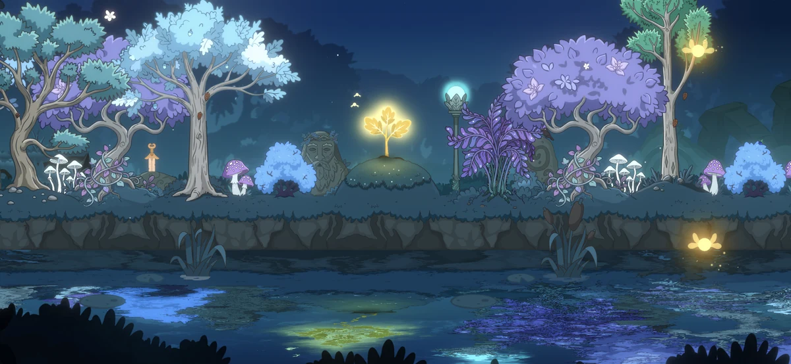

Independent game studio
About Points.GS
We believe games should have their own identity.
Points.GS is an independent game studio behind Lumen Grove — a cozy mobile game about growing a magical forest, shaping your own place, and discovering the stories hidden within it.
Our game: Lumen Grove
Lumen Grove is a cozy mobile forest farming and restoration game, available on Android through Google Play. An iOS version is planned.
Plant and harvest, clear new areas, and help the residents of a magical grove. Each small act of care contributes to the forest's growth.

Care for the Grove. Bring Light to the Magic Oak.
Care for the Grove
Plant, harvest, clear new areas and help the forest's residents.
Generate Light
These everyday actions generate Light.
Help the Magic Oak grow
Give that Light to the Magic Oak to help it grow and increase its level.
Our approach
We believe a good game is more than a collection of features. Every system should have a reason to exist, connect with the rest of the game, and contribute to the experience as a whole.
Our approach combines creativity with a product mindset. We explore ideas, put them in front of players, learn from how people actually play, and keep improving through iteration.
We want to create games that feel distinct — not because they follow a formula, but because everything in them belongs together and serves a clear idea.
Get in touch
For questions, feedback or collaboration, write to us.
Bogdan Kagitin · Game Developer · LinkedIn